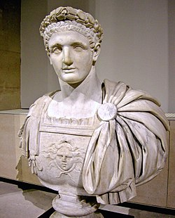

Emperadores Romanos

Augusto

Tiberio

Calígula
Claudio

Nerón

Galba

Otón

Vitelio

Vespasiano

Tito

Domiciano

Nerva
Tabla de Emperadores
| Nombre | Nombre Latín | Inicio | Fin | Notas | Retrato |
|---|---|---|---|---|---|
| Augusto | Imperator Caesar Augustus | 16 de enero de 27 a.C. | 19 de agosto de 14 | Nacido como Gaius Octavius y adoptado por su tío abuelo Julio César. En el año 31 a. C. acabó con la Guerra civil y se hizo con el control de la República romana. Fue proclamado Augustus y Princeps por el Senado en el 27 a. C. Falleció de causas naturales a la edad de 76 años, tras 40 años de gobierno. Fue posteriormente deificado. | |
| Tiberio | Tiberius Iulius Caesar | 17 de septiembre de 14 | 16 de marzo de 37 | Yerno e hijo adoptivo de Augusto, nacido como Tiberius Claudius. Fue nombrado sucesor tras la muerte de Lucio y Cayo César. Su popularidad decayó durante sus últimos años, cuando dejó la política en manos de Sejano y se retiró a la isla de Capri. Falleció de causas naturales a la edad de 77 años. | |
| Calígula | Gaius Iulius Caesar | 16 de marzo de 37 | 24 de enero de 41 | Sobrino nieto e hijo adoptivo de Tiberio. Es recordado por su carácter cruel, despótico y extravagante. Las fuentes clásicas indican que sufrió de demencia, aunque es difícil corroborar dicha afirmación. Fue asesinado a manos de senadores y militares al mando de Casio Querea. Vivió 28 años y reinó 3 años, 10 meses y 8 días. | |
| Claudio | Tiberius Claudius Caesar | 24 de enero de 41 | 13 de octubre de 54 | Tío de Calígula, proclamado emperador por la Guardia Pretoriana y confirmado por el Senado. Llevó a cabo una significativa expansión imperial, conquistando Tracia y Mauritania e iniciando la conquista romana de Britania. Falleció de causas naturales tras vivir 63 años y reinar 13 años, 8 meses y 19 días. | |
| Nerón | Nero Claudius Caesar | 13 de octubre de 54 | 0 de junio de 68 | Sobrino nieto de Augusto e hijo adoptivo de Claudio. Ascendió al trono a la edad de 16 de años. Es recordado por su tiranía y extravagancia, aunque es posible que ciertos elementos hayan sido exagerados por los historiadores clásicos. Se suicidó tras ser declarado enemigo público; reinó 13 años, 7 meses y 27 días. | |
| Galba | Servius Sulpicius Galba | 9 de junio de 68 | 15 de enero de 69 | Ascendió al trono con apoyo de las legiones hispanas y el Senado romano. Se autoproclamó como César a pesar de no formar parte de la dinastía Julio-Claudia. Fue asesinado por la Guardia Pretoriana tras reinar 7 meses y 6 días. | |
| Otón | Marcus Salvius Otho | 15 de enero de 69 | 15/19 de abril de 69 | Proclamado emperador por la Guardia Pretoriana. Se suicidó tras su derrota en la Primera batalla de Bedriacum. Reinó 3 meses. | |
| Vitelio | Aulus Vitellius | 19 de abril de 69 | 20/22 de diciembre | Proclamado por las legiones germanas del Rin en oposición a Galba y Otón, a quien derrotó en la batalla de Bedriacum. Murió en Roma asesinado por las tropas de Vespasiano. Reinó 8 meses. | |
| Vespasiano | Titus Flavius Vespasianus | 1 de julio de 69 | 23/24 de junio de 79 | Proclamado con el apoyo de las legiones de Judea y Egipto. Gobernó bajo el nombre de Imperator Caesar Vespasianus Augustus, fórmula que sería imitada (si bien con cambios ocasionales) por el resto de emperadores. Falleció por causas naturales a los 69 años. Reinó 9 años, 11 meses y 22 días. | |
| Tito | Titus Flavius Vespasianus | 24 de junio de 79 | 13 de septiembre de 81 | Hijo de Vespasiano, cambió su nombre a Tito Caesar tras su ascenso en el año 69. Gozó de una gran popularidad durante su gobierno, realizando diversas obras públicas como el Coliseo. Falleció por causas naturales a los 41 años y fue deificado. Reinó 2 años, 2 meses y 20 días. | |
| Domiciano | Titus Flavius Domitianus | 13 de septiembre de 81 | 18 de septiembre de 96 | Fue igualmente renombrado Caesar tras el ascenso de su padre, Vespasiano. Durante su reinado concluyó la Conquista romana de Britania. Fue asesinado en una conspiración. Vivió 44 años y reinó 15 años y 5 días. | |
| Nerva | Marcus Cocceius Nerva | 18 de septiembre de 96 | 27/28 de enero de 98 | Elegido por el Senado a la edad de 65 años, tras varios años de servicio público. Fue el primero de "Los cinco emperadores buenos", periodo que marcó el máximo apogeo del Imperio. Fue también el último emperador verdaderamente "italiano". Falleció por causas naturales y fue posteriormente deificado. Reinó 1 año, 4 meses y 10 días. | |